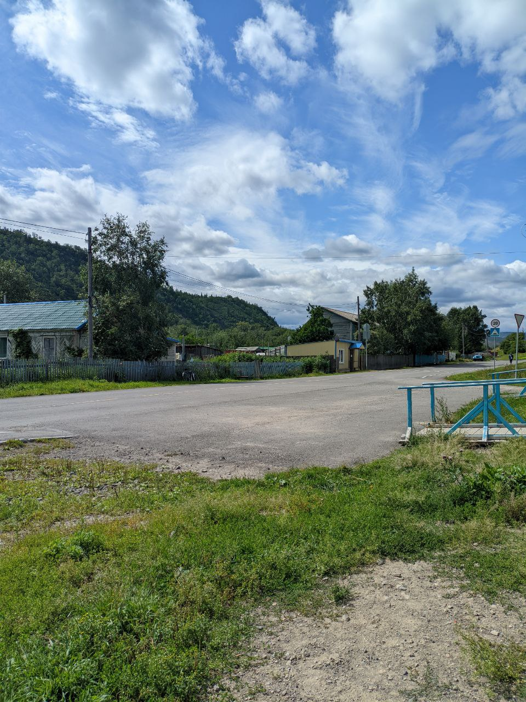

Исследования авторов проекта велись в Быстринском районе Камчатского края, находящемся в центральной части полуострова. В составе Быстринского района — два населённых пункта: административный центр село Эссо и село Анавгай, расположенные в 25 километрах друг от друга.
Население Эссо довольно разнообразно. Некоторые местные жители говорят об Эссо как о сплаве “камчатскости”: там живут коренные коряки и эвены, люди, недавно перебравшиеся туда со всей России, камчатцы, живущие на Камчатке поколениями. При этом ни одна из этих категорий населения не является для Быстринского района “исконной”, что прослеживается в местных нарративах. Эвены пришли лишь в середине XIX в., коряков переселили из соседнего, Соболевского, района, условные “русские” здесь — исторически пришлые. Любопытна символическая значимость эвенской культуры в Быстринском районе. В локальных дискурсах присутствуют идеи о необходимости изучать эвенский язык — ожидаемо, прежде всего среди эвенов, и эвенский преподаётся в некотором объёме в школе; в это же время как о возможности преподавать и изучать корякский жители — даже коряки — почти не задумываются, поддерживая идею преподавания эвенского. Так, специфической репрезентации соболевской корякской культуры не происходит — в крайнем случае репрезентируются и воспроизводятся “общекамчатские” корякские атрибуты, а из локальных — историческая память о Соболево и особенности локального варианта корякского языка. Кроме того, на праздниках и мероприятиях, где конструируется так называемая фестивальная этничность, культурное разнообразие Быстринского района объединяется под “этикеткой” эвенскости. Тут же вспомним упомянутые конкурсы, где для репрезентации разных культур народов Камчатки необходимо прежде всего выглядеть как коренной и происходить из среды “коренных”.
Эссо часто репрезентируется как туристическое место. В селе насчитывается с десяток туристических комплексов и отдельных гостевых домов, несколько тематических музеев и “этнических” стойбищ, визит-центр, несколько мастерских, где производят среди прочего сувениры. Быстринский район для жителей Камчатки и для приезжих туристов — это “доступный север”, куда можно довольно быстро и просто добраться от Петропавловска Камчатского — на автотранспорте за 8 часов. Местные жители гордятся дорожной связанностью с Петропавловском, регулярными продуктовыми поставками один-два раза в неделю. Дальше на север ведёт лишь сезонный зимник, недоступный в тёплое время года. В северные районы можно добраться авиатранспортом. В Быстринском районе активно используются геотермальные источники — для отопления, водоснабжения, выращивания овощей и фруктов в теплицах. Инфраструктура, обеспечивающая пользование этими природными благами, стала появляться с середины ХХ века. На реке Быстрой построена местная ГЭС. Регулярное транспортное сообщение с городом, снабжение товарами, развитая коммунальная инфраструктура, относительная автономность и самообеспечение района позволяют противопоставлять Быстринский район как северам, удалённым и проблемным в плане инфраструктуры, так и городу (Петропавловску-Камчатскому), с 1990-х годов и по сегодяшний день. Кроме того, в районе присутствует оленеводство, это традиционное занятие коряков-чавчувенов и эвенов. При советском режиме в процессе коллективизации частные стада перешли государству. После распада Советского союза оленеводство пришло в упадок, однако на основе бывшего колхоза в Эссо удалось создать частную фирму. Её сотрудники и сегодня занимаются оленеводством, ездят в тундру, поголовье оленей составляет около восьми тысяч.
